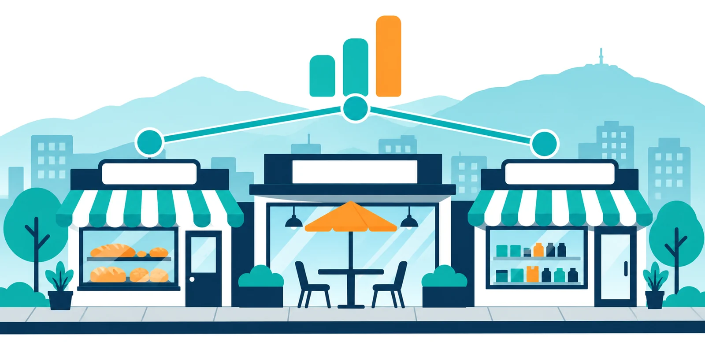
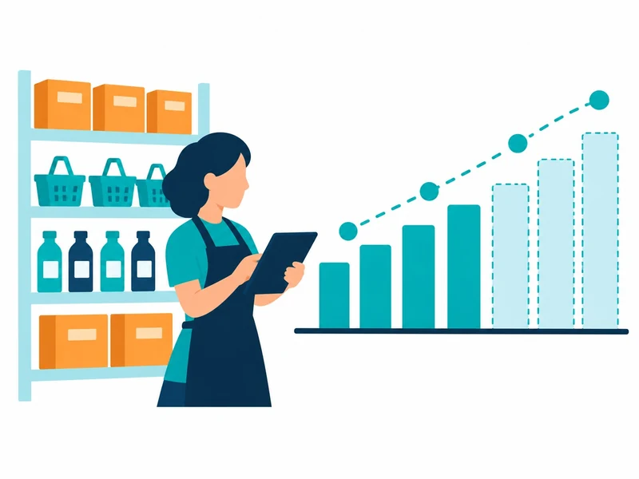
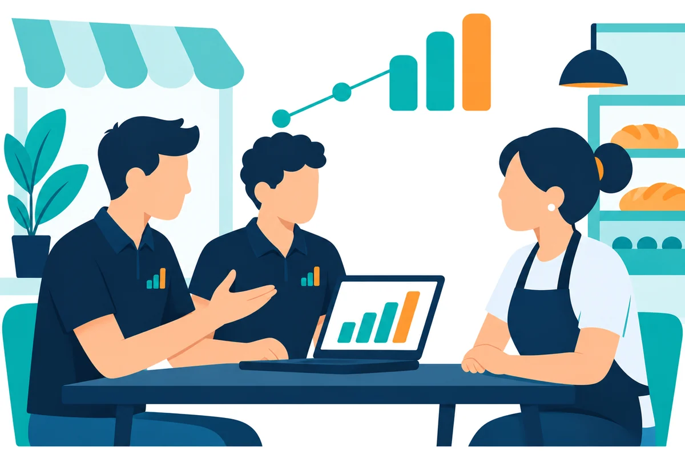

Deje de adivinar.
Decida con los datos de su negocio.
Sepa qué se vende, qué sobra y qué falta sin armar reportes a mano. En dos semanas le entregamos la herramienta funcionando, con los datos de su negocio, y capacitamos a su equipo para que la use sin depender de nosotros.
Para restaurantes, comercios, distribuidores, colegios y droguerías de Bogotá.

Cuatro herramientas para dejar de hacerlo a mano
Cada una se entrega funcionando, con los datos de su negocio, y con una sesión para que su equipo aprenda a usarla.
-
Tableros de ventas
Vea de un vistazo qué se vende, a qué clientes y en qué días, sin armar tablas a mano cada semana.
-
Reportes automáticos
Los reportes que hoy arma alguien a mano salen solos, con el mismo formato, cada semana o cada mes. Esas horas vuelven a su equipo.
-
Pronósticos de demanda
Sepa cuánto va a vender por producto o por ruta antes de comprar, y compre o produzca con menos sobrantes y menos faltantes.

-
Asistentes de IA para WhatsApp
Un asistente responde al instante las preguntas frecuentes de sus clientes (horarios, precios, pedidos) y pasa a una persona lo que no puede resolver. Su equipo atiende solo lo que de verdad necesita a una persona.
¿No sabe cuál le conviene? Cuéntenos qué le quita más tiempo y se lo decimos.
Pedir mi diagnósticoDos semanas, de la primera conversación a la entrega
Cada proyecto sigue el mismo calendario de 14 días. Desde el primer día usted sabe qué recibe y cuándo.
Calendario del proyecto, en días
-
Diagnóstico
Conversamos con usted y revisamos los datos que su negocio ya tiene. No tiene costo ni lo compromete: al final recibe por escrito qué se construiría, cuánto cuesta y cómo se mide que funcione.
-
Construcción
Armamos la herramienta con los datos reales de su negocio y se la mostramos a mitad de camino, para corregir a tiempo lo que no le sirva.
-
Entrega y capacitación
Dejamos la herramienta funcionando y enseñamos a su equipo a usarla y a mantenerla. Desde ese día el trabajo queda en sus manos.
Hecho para negocios que no tienen un analista de datos
- Resultados en dos semanas
- Un plazo fijo de 14 días, del diagnóstico a la entrega. Sin proyectos que se alargan por meses.
- Precio cerrado antes de construir
- Al terminar el diagnóstico usted recibe por escrito qué se entrega, cuándo y por cuánto. Si lo acepta, ese precio no cambia durante el proyecto.
- Se arma con lo que ya tiene
- Trabajamos con sus archivos de Excel, su sistema de facturación o los registros que lleve hoy. No hace falta cambiar de sistema para empezar.
- Capacitación incluida
- La sesión de capacitación va dentro del proyecto. Su equipo aprende a usar la herramienta y a mantenerla, y desde la entrega la maneja sin ayuda.
Las personas detrás de DataPyme
Somos dos estudiantes de UNICAFAM, en Bogotá. Trabajamos con análisis de datos, programación en Python y herramientas de inteligencia artificial, y le explicamos cada resultado en el lenguaje de su negocio. Usted habla directamente con quienes construyen la herramienta.

-
Elquin Retavisca Linares
Cofundador
-
Carlos Marín
Cofundador
Cuéntenos qué le quita más tiempo
Escriba qué reporte o proceso hace hoy a mano. Le respondemos el siguiente día hábil para agendar su diagnóstico, que no tiene costo ni compromiso.
- Correo
- contacto@datapyme.example
- +57 300 000 0000
- Ciudad
- Bogotá, Colombia
- Horario
- Lunes a viernes, de 8:00 a 17:00
Datos de ejemplo: DataPyme es un emprendimiento ficticio de un proyecto académico.